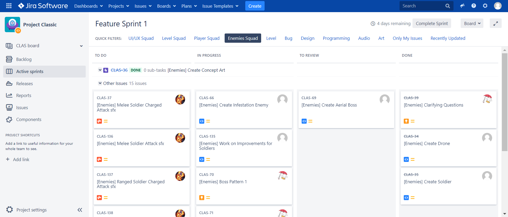
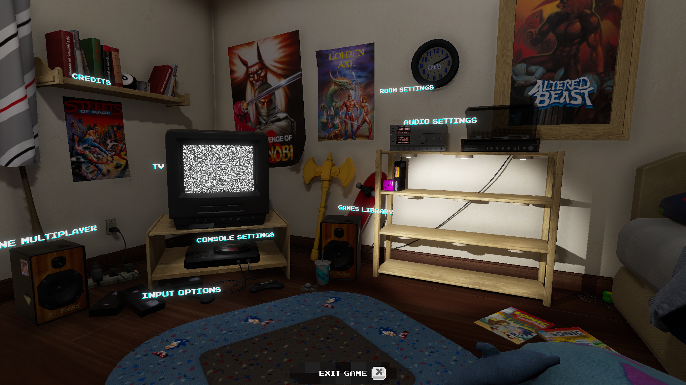
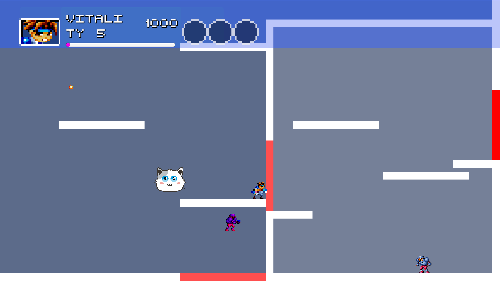
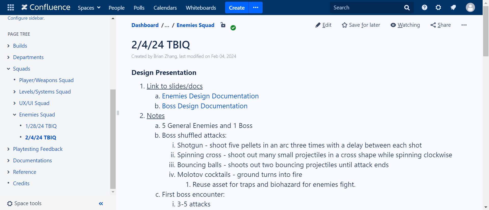
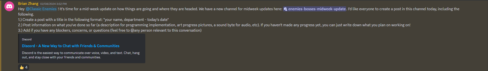
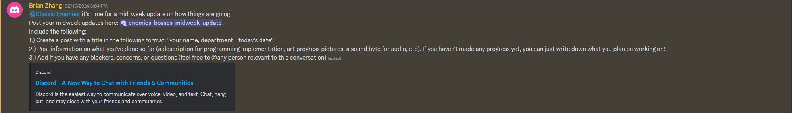

QA 1 + Sprint 2
Production Sync-up Meeting
During the production sync-up meeting, the lead producer meticulously updates each squad on the progress made in various departments using platforms such as Jira, Confluence, and Unity Hub editor.
These updates are crucial for ensuring all team members are aligned with the project's current status and upcoming milestones. The lead producer highlights important non-mandatory events that are
highly recommended for leads, such as mentorship sessions, workshops, and playtesting sessions. These events are pivotal for professional development and enhancing the team's cohesion and expertise.
The discussion also encompasses department updates, setting the agenda for the upcoming studio meeting on Sunday, which is instrumental in strategizing for the week ahead and ensuring that all squads
are prepared and informed of their responsibilities and objectives.
Leads Meeting
In the leads meeting, an intricate discussion unfolds around the innovative ideas proposed by the designer directors, focusing on how these can be seamlessly integrated into the project from the programmer
directors' perspectives. Updates on art and audio assets from the respective directors provide a comprehensive overview of the resources available and any gaps that need to be addressed. The core of the
meeting revolves around the game's overarching theme and narrative, ensuring that all aspects of the game are coherent and align with the vision. High-priority tasks and issues are scrutinized, with a focus
on their importance for enhancing general gameplay. A collaborative dialogue ensues, examining whether certain features are present in the prototype, which helps in assessing the project's scope and identifying
any dependencies among departments that must be resolved to integrate these features into the game effectively.
Studio-wide Meeting
The first Quality Assurance (QA) week is a pivotal moment for the team, marked by a comprehensive playtesting session using the latest game build uploaded to Confluence. Team members collectively identify bugs
and glitches, determining whether they represent incorrect behaviors or are part of the intended game mechanics. This collaborative effort enables the QA team to accurately log these issues into the feedback
tracker Google sheet. The meticulous tracking of bugs is vital for the programming, quality assurance, and production teams to monitor the resolution status of these issues, ensuring a smooth and efficient debugging process.
Organizing Playtest Feedback Tracker
The initial step for quality assurance involves detailing each bug within the Google sheet across various columns, including original issue text, reporting source, and playtest reporter. Following this,
it's the responsibility of each producer squad to refine these entries, ensuring clarity and completeness in details such as task name, issue type, priority, and estimated complexity. This organization
not only facilitates a more streamlined process for adding these issues to Jira but also enables programming directors to efficiently assign tasks to team members for resolution. The process emphasizes the
collaborative effort required to maintain a clear and actionable bug tracking system.
Art and Audio Asset List
The compilation of the art and audio asset list is a critical task for producers, involving the categorization of assets by name and type, along with the updating of pertinent details such as the creation of Jira tasks,
asset IDs, and the inclusion of Jira links and status updates. Art directors play a supervisory role in this process, enhancing the list by assigning sprints, annotating notes, and specifying assignees and time estimates.
This meticulous process ensures that all art and audio assets are accounted for, scheduled appropriately, and assigned to relevant department members for implementation, starting from the conceptual stages to the final inclusion in the game.

Logging and Updating Tasks on Jira
The process of logging and updating tasks on Jira encompasses a comprehensive review of the design documents by producers, engaging in playtesting, conducting squad meetings for in-depth discussions, and addressing any queries.
This thorough approach enables the identification of bugs needing resolution and new programming implementations critical for enhancing gameplay. The early detection and resolution of bugs are emphasized to mitigate future issues,
highlighting the proactive measures taken by the programming team to ensure a seamless gaming experience.

Playtesting Project Classic Prototype
The playtesting of the "Project Classic" prototype is an exploratory phase where different game modes, including prototype, boss, and start run, are tested. This phase is crucial for assessing the player's interaction
with various game elements, such as weapons, drones, soldier enemies, and environmental obstacles. The identification of inconsistencies in enemy behavior during this phase is particularly important for informing
subsequent development efforts, ensuring that gameplay mechanics are both challenging and engaging for players.

Task Breakdown Implementation Questions Documentation
This section would delve into the detailed notes and documentation surrounding the design presentation, linking to relevant slides or documents. It would outline the comprehensive design documentation for enemies and
bosses, including the strategic considerations for room progression, enemy types, and interactions within the game environment. The documentation aims to address critical design questions, such as enemy movement patterns,
the introduction of environmental hazards, and the balance between enemy health and attack power, ensuring that the game's difficulty scales appropriately and offers a rewarding experience for players.

Mid-week Update Checkup
The midweek update checkup serves as a crucial touchpoint for the "Classic Enemies" squad, conducted via a structured message in our dedicated Discord channel. This initiative prompts each team member to share updates
in a specific format, highlighting their name, department, and the date, to foster a consistent reporting structure. Within their updates, members detail their weekly achievements—ranging from programming milestones and
visual art progress to audio developments. This approach not only ensures accountability but also encourages the sharing of progress, serving as a motivational tool. For those lagging behind, it's an opportunity to outline
upcoming tasks and realign with the project's objectives. Crucially, the checkup acts as an open forum for voicing concerns, pinpointing obstacles, and posing questions, facilitating a culture of open communication and
collaborative problem-solving. By directly tagging relevant individuals for specific issues, the process aims to swiftly address challenges, maintaining project momentum and reinforcing team cohesion and motivation.


Hours Breakdown
QA 1
- Production Sync-up Meeting (30 minutes)
- Leads Meeting (1 hour)
- Studio-wide Meeting (2 hours 15 minutes)
- Studio Announcements: 11:00 AM ~ 11:20 AM (10 mins)
- Project Announcements: 11:20 AM ~ 11:30 AM (20 mins)
- Squad Meeting: 11:30 AM ~ 12:15 PM (45 mins)
- Department Meeting: 12:15 PM ~ 1:15 PM (60 mins)
- Organizing Playtest Feedback Tracker (1 hour 30 mins)
- Art and Audio Asset List (1 hour 15 mins)
- Logging and Updating Tasks on Jira (1 hour 30 mins)
- Playtesting Project Classic Prototype (1 hour)
Start of Sprint 2
- Production Sync-up Meeting (30 minutes)
- Leads Meeting (1 hour)
- Studio-wide Meeting (2 hours 15 minutes)
- Studio Announcements – 11:00 AM ~ 11:20 AM (10 mins)
- Project Announcements – 11:20 AM ~ 11:30 AM (20 mins)
- Squad Meeting – 11:30 AM ~ 12:15 PM (45 mins)
- Department Meeting – 12:15 PM ~ 1:15 PM (60 mins)
- Task Breakdown Implementation Questions Documentation (1 hour)
- Organizing Playtest Feedback Tracker (1 hour 15 mins)
- Logging and Updating Tasks on Jira (1 hour 30 mins)
- Midweek Update Checkup (45 minutes)
- Playtesting Project Classic Prototype (45 minutes)
Time Investment: 3 credits x 2 x 3 hours = 18 hours